UDN
Search public documentation:
MatineeUserGuideJP
English Translation
中国翻译
한국어
Interested in the Unreal Engine?
Visit the Unreal Technology site.
Looking for jobs and company info?
Check out the Epic games site.
Questions about support via UDN?
Contact the UDN Staff
中国翻译
한국어
Interested in the Unreal Engine?
Visit the Unreal Technology site.
Looking for jobs and company info?
Check out the Epic games site.
Questions about support via UDN?
Contact the UDN Staff
UE3 ホーム > 「Unreal」エディタとツール > 「Unreal」 Matinee のユーザーガイド
UE3 ホーム > Matinee とシネマティック > 「Unreal」 Matinee のユーザーガイド
UE3 ホーム > シネマティック アーティスト > Unreal」 Matinee のユーザーガイド
UE3 ホーム > Matinee とシネマティック > 「Unreal」 Matinee のユーザーガイド
UE3 ホーム > シネマティック アーティスト > Unreal」 Matinee のユーザーガイド
「Unreal」 Matinee のユーザーガイド
概要
Matinee を開く
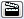
ボタンをクリックするという方法、あるいは、レベルエディタの [View] (ビュー) メニュー内にある UnrealMatinee を選択して後、表示されるリストから必要な Matinee シーケンスを選ぶという方法です。Matinee を使用する場合は、ビューポートのうち少なくとも 1 つは、realtime (リアルタイム) に設定することを推奨します。これによって、シーケンスを再生あるいはスクラブ再生する時に更新されることになります。 Matinee においては、シーケンスのプレビューの一環として、レベル内のアクタが動き回りプロパティが変化します。ただし、Matinee から出ると、レベルのステートはすべて、Matinee に入った時の原状に復帰します。このような理由から、Matinee にいる間はレベルの修正または新たなアクタの作成は避けるべきです。また、Matinee が開いている間はレベルを保存することもできなくなります。Matinee が開いている状態でマップを保存しようとすると、まず Matinee を閉じるように促されます。Matinee のレイアウト
次は、Matinee のツールそのもののスクリーンショットです。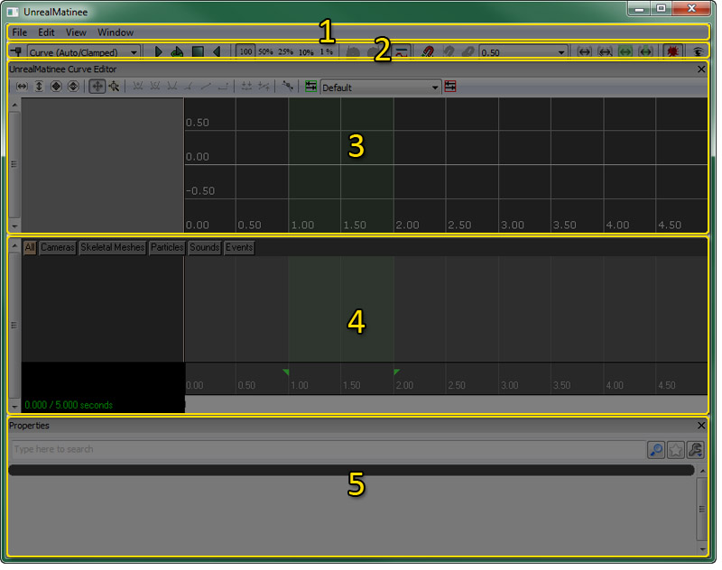
メニューバー
ファイル
- Import... - 以前にエクスポートされている FBX / COLLADA シーンをインポートします。
- Export All... - 外部アプリケーションで編集するためにシーン全体を FBX / COLLADA ファイルにエクスポートします。(ただし、エクスポートできない項目もあります。)
- Export Sound Cue Info... - Matinee シーケンスのためのすべての SoundCue 情報を、CSV ファイルにエクスポートします。
- Bake Transforms on Export - シーンをエクスポートする前に変形をベークするかしないかを切り替えます。
編集
- Undo - 最後に完了したアクションを取り消します。
- Redo - 最後に undone (取り消し)したアクションをやり直します。
- Delete Selected Keys - タイムライン内で現在選択されているキーを削除します。カーブエディタ内でキーを選択すると、タイムライン内では選択されません。
- Duplicate Selected Keys - (わずかな時間オフセットをともなって) タイムライン内で現在選択されているキーを複製します。
- Insert Space At Current - 現在の時間カーソル位置で Matinee シーケンスに指定された時間量を挿入します。
- Stretch Section - ループセクションに含まれているシーケンスの部分を延ばす (または縮める) ことによって、指定された時間量に適合させます。
- Delete Section - ループセクションに含まれているシーケンスの部分を削除します。
- Select Keys In Section - ループセクションに含まれているすべてのキーを選択します。
- Reduce Keys - 現在選択されているトラック内にあるキーの量を削減します。これが便利になるのは、外部アプリケーションで編集されたトラックに対してです。そのようなトラックは、必要なアニメーションを得るには不要で余分なキーをかなり含んでいることがあります。詳細は、 キーの削減 をご覧ください。
- Save As Path-Building Positions - パスをビルドする際に、動いているアクタの現在の時間と位置を保存します。
- Jump To Path-Building Positions - 時間カーソルを保存されたパスのビルド位置まで移動させます。
- Configure Keyboard Shortcuts - Hotkeys Editor を開きます。
ビュー
- Draw 3D Trajectories - ビューポート内の 3D 移動パスの表示を切り替えます。各トラックのパス表示は、on/off の切り替えができます。そのためには、トラックリスト内で、トラックの上にある
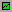
ボタンをクリックします。 - Show Trajectories for All Tracks - シーケンス内にあるすべての Movementトラックの 3D 移動パス表示を有効にします。
- Hide All Trajectories - シーケンス内にあるすべての Movementトラックの 3D 移動パス表示を無効にします。
- Snap keys - 時間カーソルおよびキーのスナップを切り替えます。
- Snap Time to Frames - タイムラインカーソルを [Snap Size] (スナップサイズ) ドロップダウンで指定されているフレームレートにスナップします。スナップサイズが秒単位のフレームで設定されている場合にのみ有効になります。
- Fixed Time Step Playback - 再生レートを、[Snap Size] (スナップサイズ) ドロップダウンで指定されたフレームレートに固定します。スナップサイズが秒単位のフレームで設定されている場合にのみ有効になります。
- Show Frame Numbers in Anim Tracks - Anim Controlトラックの現在のカーソル位置について、秒数ではなくフレーム数の表示に切り替えます。
- Show Cursor Position for All Anim Keys - Anim Control トラックのカーソル位置情報を表示する際、現在選択されている Anim Control トラックについてのみ行うのか、あるいは、シーケンス内のすべての Anim Control トラックについて行うのか、その切り替えをします。
- Zoom To Time Cursor Position - 現在のカーソル位置上、あるいは、可視的なタイムラインの中心上で、タイムラインのズームイン/ズームアウトを切り替えます。
- Display Frame Stats in Viewport - ビューポート内のフレーム統計値の表示を切り替えます。
- Fit View to Sequence - タイムラインをシーケンス全体にズームします。
- Fit View to Selected - タイムラインを選択されたキー (複数あり) にズームします。
- Fit View to Loop - タイムラインをループセクションにズームします。
- Fit View/Loop to Sequence - ループセクションの始点および終点を、シーケンス全体の始点および終点に設定します。
- Enable Gore in Editor Preview - エディタプレビュー内で流血シーンの表示を切り替えます。
- Toggle Curve Editor - カーブエディタの表示を切り替えます。
ウィンドウ
- UnrealMatinee Curve Editor - カーブエディタの表示を切り替えます。
- Properties (プロパティ)- プロパティペインの表示を切り替えます。
ツールバー
以下は、ツールバーのボタンについての説明です。ツールバーの左から右の順に解説していきます。 アイコン | 説明 || 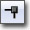 | 選択されたトラック上で、現在の位置にキーフレームを追加します。 |
| 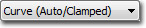 | 新たなキーを追加する際に使用する、デフォルトの InterpMode を設定します。 |
| 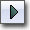 | 現在の位置からプレビュー再生を開始します。 |
| 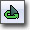 | ループセクションのプレビュー再生をループします。 |
| 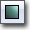 | プレビュー再生を中止します。 |
| 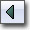 | プレビュー再生を逆回しで開始します。 |
| 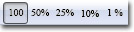 | プレビュー再生のスピードを調整します。 |
| 最後の動作を取り消します。 | |
| 取り消した動作をもう一度行います。 | |
| 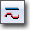 | カーブエディタの表示を切り替えます。 |
| 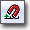 | 時間カーソルおよびキーのスナップを切り替えます。 |
| 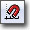 | タイムラインカーソルを [Snap Size] ドロップダウンで指定されたフレームレートにスナップします。スナップサイズが秒単位のフレームで設定されている場合にのみ有効になります。 |
| 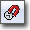 | 再生レートを、[Snap Size] ドロップダウンで指定されたフレームレートに固定します。スナップサイズが秒単位のフレームで設定されている場合にのみ有効になります。 |
| 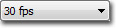 | スナップおよび視覚化のために、タイムラインの時間粒度を設定します。 |
| 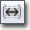 | タイムラインをシーケンス全体にズームします。 |
| 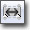 | タイムラインを選択されたキー (複数あり) にズームします。 |
| 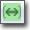 | タイムラインをループセクションにズームします。 |
| 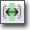 | ループセクションの始点および終点を、シーケンス全体の始点および終点に設定します。 |
| 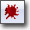 | エディタプレビュー内で流血シーンの表示を切り替えます。 |
| 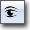 | Matineeのために、Gamecaster 録画ウィンドウ を起動します。 |
| Matinee の ムービーキャプチャー を開始します。 |
カーブ エディタ
カーブ エディタによって、グラフィックな視覚化が可能になり、Matinee シーケンス内のトラックによって使用されるアニメーション カーブを編集することができます。Matinee 内のカーブ エディタで編集可能なアニメーションを持つトラックには、 のような切り替えボタンがついています。このボタンをクリックすると、トラックのカーブ情報をカーブ エディタに送ることができます。このカーブは、カーブ エディタで視覚化され、トラック情報がトラックリストに表示されることになります。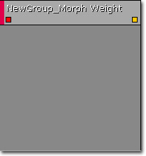
カーブ エディタ内でカーブ情報を操作する際の詳細については、 カーブ エディタ ユーザーガイド を参照してください。タイムラインペイン
タイムラインペインには、Matinee シーケンス内に含まれているあらゆるフォルダーおよびグループ、トラックのリストがあり、それらがどこで編集可能であるかということに関するキーフレーム情報を表示します。タイムラインペインは、次の 4 つの部分から構成されています。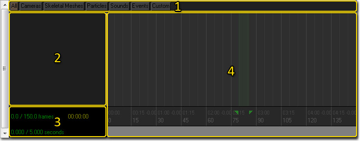
グループタブ
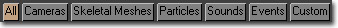
タイムラインペインの最上部で左右に広がるタブによって、現在の Matinee シーケンスに存在しているすべてのグループタブが表示されます。グループタブを使用すると、グループおよびトラックをその機能に基づいて構成することが容易になります。使用するしないは、完全に任意です。非常にシンプルなシーケンスでは、すべてのグループおよびトラックを、デフォルトの [All] タブの中に置いたままにしてもよいでしょう。しかし、インゲームのシネマティックスを作成するために使われるような複雑なシーケンスについては、これらのグループタブを利用するのが最善の策となります。理由は、グループおよびトラックの数が急速に増加して操作するのが難しくなるからです。 [All] タブを使用すると、常に、シーケンス内にあるすべてのグループとトラックが表示されることになります。したがって、関係するトラックをそれに対応するグループタブに追加することによって、速く簡単にそれらのグループおよびトラックを見つけ編集することができます。自分用の独自のタブを作成してデフォルトで備わっているタブに付け加えることによって、独自の基準にしたがってグループとトラックを効果的に整理することができます。グループリストおよびトラックリスト
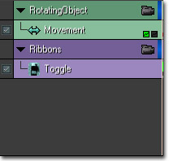
グループおよびトラックリストによって、現在選択されているグループタブ内にあるすべてのグループおよびトラックが表示されます。新規の Matinee シーケンスのリストは、デフォルトでは空になっています。タイムライン
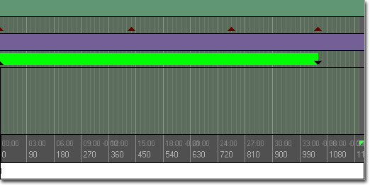
タイムラインは、シーケンス内のすべてのトラックに関する全キーフレームを、グラフィカルに表示します。底辺にそって水平に時間が表示されています。また、ループセクション (緑) およびシーケンス自体 (赤) の始点および終点を示すマーカーが含まれています。キーは、タイムライン内で直接選択および修正が可能です。単純に三角形として示されているキーもあれば、色がついたバーを伴う三角形として示されているものもあります。これらのキーは、アニメーションおよびサウンドなどのためのもので、固有の持続期間を持ちます。色がついたバーによって、キーがトリガーとなっているアクションの持続期間が示されます。プロパティペイン
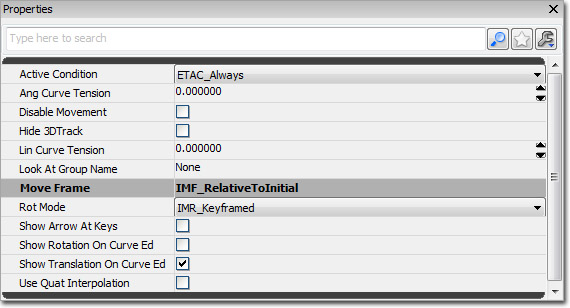
プロパティペインは、標準的な Unreal プロパティウィンドウです。タイムラインペインのトラックリスト内で、現在選択されているフォルダーまたはグループ、トラックのプロパティを表示します。コントロール
マウスの操作
| 背景部分をクリックしてドラッグ | シーケンスをパンします。 |
| マウスホイール | ズームイン/アウトします。 |
| キー上でクリック | キーフレームを選択します。 |
キーボードの操作
| オブジェクト上で Ctrl-クリック | オブジェクトの選択を切り替えます。 |
| Ctrl-ドラッグ | 現在の選択を移動させます。 |
| Ctrl-Alt-ドラッグ | 範囲指定します。 |
| Ctrl-Alt-シフト-ドラッグ | 範囲指定します。(現在の選択に追加します) |
ホットキー
| エンターキー | 選択したトラック上で現在の位置にキーフレームを追加します。 |
| Ctrl-W | 選択したキーフレームを複製します。 |
| Delete | 選択したキーフレームを削除します。 |
| 左右のカーソルキー | 選択したトラック上で前の/次のトラックにジャンプします。 |
| 上下のカーソルキー | リスト内で選択グループを上下に移動します。 |
| Ctrl-Z | 操作を取り消します。 |
| Ctrl-Y | 取り消した操作を復活させます。 |
| R | Razor Tool (レイザーツール) (AnimControl トラックのためのものです。後述します) |
Matinee アクションを作成する
Matinee は Kismet にしっかりと統合されています。Matinee アクションは、Kismet 内でアクションの一種として認識されます。また、アクションの入力をレベル内の何らかのイベントに接続することで、再生が開始されます。Kismet に関する詳しい知識をお持ちでない場合は、 Unreal Kismet ユーザーガイド? を参照することをお勧めします。 新しい Matinee シーケンスを作成するには、Kismet を開いてバックグラウンドを右クリックし、[New Object] (新しいオブジェクト) メニューを表示させます。"Actions" (アクション) の下に "Matinee" があります。あるいは、同じメニューに [New Matineee] (新規 Matinee) というオプションがあります。これを使用するか、Kismet で [M] キーを押しながらアクションを追加したい場所をクリックしてください。新しい Matinee アクションは、オレンジ色の "Matinee data" (Matinee データ) 変数と共に表示されます。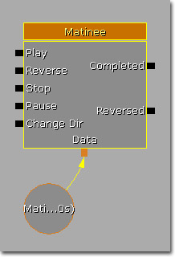
'Matinee Data' は、シーケンスで使用する実際のキーフレームデータです。Matinee アクションが機能するためには、そのアクションに 'Matinee Data' オブジェクトが接続されている必要があります。左のさまざまな入力を利用すると、Kismet スクリプトで Matinee シーケンスの再生を制御することができます。これは、DVD プレーヤにすこし類似した方法です。右側の "Completed" および "Reversed" 出力は、シーケンスが完了すると on になります。"Completed" は、シーケンスが最後に到達して完了すると on になり、"Reversed" は、プレイバックされているシーケンスが開始点まで戻って完了すると on になります。"Stop" 入力をアクティブ化しても "Completed" または "Reversed" は on になりません。Matinee アクションに接続されているオブジェクト変数は、シーケンスによって修正されるアクタです。 Kismet 内で Matinee アクションに対して設定できるオプションは 2、3 あります。:- Client Side Only - このシーケンスがゲームプレイのいかなる部分にも影響を与えることはなく、したがって複製される必要、またはネットワークされたマシン上で実行される必要がない、ということをエンジンに指示します。
- Force Start Pos - このオプションがチェックされると、ForceStartPosition プロパティで指定された時間* - またはタイムライン* - から常に再生を開始するように、シーケンスに対して指示します。
- Force Start Position - 再生の入力がアクティベートされた時にアニメーションを開始するタイムライン上の始点を指定します。Force Start Pos がチェックされている必要があります。
- Interp For Path Building - このオプションがチェックされると、パスがビルドされている際にタイムライン内で、 Path-Building Position で指定された時間までジャンプするように、シーケンスに対して指示します。
- Is Skippable - このオプションがチェックされると、CANCELMATINEE コンソールコマンドを使用してシーケンスをスキップできるようになります。
- Looping - このオプションがチェックされると、シーケンスが終点に達すると始点に戻ってループするようになります。
- No Reset On Rewind - このオプションがチェックされると、RelativeToInitial 補間を使用している Movement トラックによって影響を受けるあらゆるアクタが、シーケンスが巻き戻された時に、現在の地点において設定されている初期位置を使用するようになります。すなわち、アクタは次回のアニメーションのループにおいて、アニメーションが終了した地点と同じ位置から開始することになります。
- Play Rate - アニメーションを再生するときの最終的なスピードを決める乗数を設定します。値が 1 の場合は、通常のリアルタイムのスピードになります。
- Rewind If Already Playing - 再生中にユーザーがプレイ入力をアクティベートした場合、このプロパティによって、アニメーションが自動的に始まりに巻き戻されます。
- Rewind On Play - プレイ入力がアクティベートされた場合、アニメーションが一時停止中であっても、このプロパティによって、アニメーションが常に始まりから再生されることになります。
Mover (ムーバー)
グループおよびトラックの操作
Matinee は、グループのセットという考え方を中心にして構成されています。グループは、レベル内の特定のアクタと関連づけられています。新たなグループを作成する
Matinee シーケンスで新たなグループを作成するには、まず、編集するレベルのアクタを選びます。Matinee の左側に沿って配置されている灰色のバーを右クリックして、Add New Group（新しいグループの追加）を選択します。(Director グループと AI グループについては後述します)。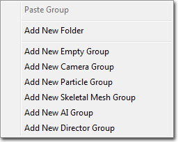
新しいグループ名を入力するように促されます。グループ名は、Matinee シーケンス内で重複できません。また、スペースを含むことはできません。[OK] を選択すると、新たなグループヘッダが表示されます。ここで、Kismet 内に Matinee Action を表示すると、作成したグループ名がついた変数コネクタが新規に作成されていることが分かります。また、そのグループと関連するアクタに対する参照を含む新しいオブジェクト変数も作成されています。複数のアクタを同じグループコネクタに接続することができます。これが役立つのは、例えば、多数のライトの明るさを経時的に同じ方法で制御したい場合です。 グループヘッダ内にある色のついた小さなバーは、エディタの「グループカラー」 です。この色は、Matinee 内のさまざまなものに使用され、シーン内にあるどのオブジェクトが Matinee 内のどのグループによって制御されているか識別できるようになっています。この色を変更するには、グループを選択した後に、ウィンドウの最下部にあるグループカラープロパティを調整します。グループタイトルを右クリックすると、グループ全体の名前を変更または削除できます。グループを選択したならば、上矢印および下矢印キーを押すことによって、グループのリスト内の位置を移動することができます。これは、類似したグループをまとめておくために便利です。 なお、グループ (またはグループ内のトラック) を選択した場合は必ず、レベル内のアクタが選択されます。その逆に、レベル内のアクタを選択すると必ずグループが選択されることになります。新たなトラックを作成する
グループ単独では、対象としているアクタに対して何も作用できません。実際にアクタに対して何らかの変更を加えるには、トラックをそのグループに追加する必要があります。グループのヘッダ上で右クリックすることによって、新たなトラックメニューが開きます。これには、追加可能な Matinee トラックの各種クラスがすべてリスト表示されます。必要なクラスを選択すると、グループの中に表示されるようになります。トラッククラスによっては、追加する前にさらに情報を入力するように促される場合があります。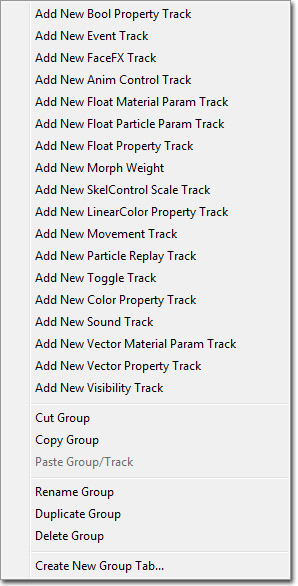
トラッククラスの中には、グループ 1 つにつき 1 つのトラッククラスしか許されないものがあります (たとえば、Movement トラック)。またその一方で、同一グループ内に複数のトラックが許されるものもあります (たとえば、浮遊プロパティトラック)。 グループ内のすべてのトラックを非表示にする場合は、グループヘッダ上の矢印を押して、折りたたみます。グループ内でトラックの順番を変えるには、グループを移動する場合と同じように、トラックを選択して上下の矢印キーを使用します。 トラックのエフェクトに関して、その on/off を切り替えるには、トラック名の横についているチェックボックスを使用します。例えば、次の画像では、Movement トラックが無効になっているため、Matinee シーケンスが実行される際に Movement トラックのエフェクトが見えなくなります。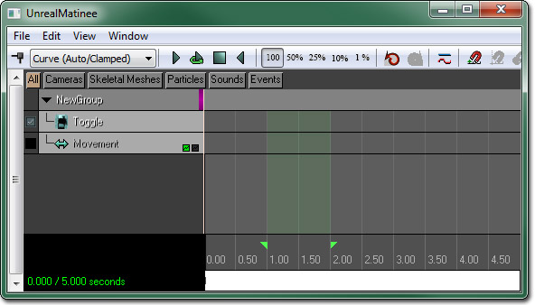
キーフレーム
Matinee の選択方法と操作方法は、UnrealEngine 3 の他の部分にあるツールと同様のものです。 キーフレーム上でクリックすると、再生位置がそのキーフレームまで移動し、Matinee が record (録画) モードになります。トラックが制御しているアクタのプロパティを変更すると、キーフレームの値が変更されます。キーフレームの編集中は、Matinee の情報ボックス内に小さな赤丸が表示されます。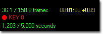
他の位置にスクラブしたり、再生を開始すると、record モードが解除され、シーン内でアクタに加えた変更は記憶されません。シーケンスの長さを調整する
シーケンスの長さを変更するのは簡単です。シーケンスの終点を示す赤いハンドル (図中 22番) をつかみ、想定しているシーケンスの新たな終点時間までドラッグするだけです。キーフレームをシーケンスの範囲外に出しても全く安全です。 シーケンス内の特定の時点に時間を追加することも可能です。そのためには、再生位置をその時間を挿入する時点まで移動し、[Edit] (編集) メニューから Insert Space At Current (ここにスペースを挿入する) を選択します。ループセクション
Matinee で緑色で強調表示されている部分が、ループセクションです。これは、Matinee 内のいくつかのユーティリティによって使用されます。このループセクションを調整するには、スクラブバー上で始点と終点を示している緑色のハンドルをドラッグします。 [Loop preview playback] (プレビュー再生をループする) ボタン (図中 3 番) を押すと、再生位置がループセクションの始点までジャンプし、そこから最後まで再生し終わると、再び始点までジャンプして戻ります。これによって、シーケンスの短いセクションを繰り返し見ることができるため、想定したとおりの動作になっているか確認することができます。 現在のループセクションを新たな長さに拡張することもできます。そのためには、ループセクションを必要な範囲をカバーするように設定し、[Edit] (編集) メニューから Stretch Section (セクションを拡張する) を選択します。テキスト入力ダイアログによって、現在のセクションの長さが表示され、必要な長さを新たに入力することが可能になります。キーフレームは、この新たなセクションの長さに応じて再配置されます。また、ループセクション全体を削除するには、[Edit] (編集) メニューから Delete Section (セクションを削除する) を選択します。Matinee データを共有する
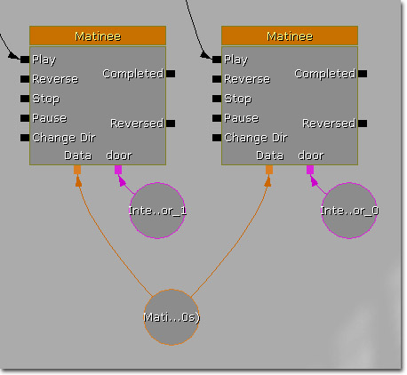
Matinee Data 変数を Matinee Action に接続すると、すべてのオブジェクト変数とイベント出力コネクタが表示されます。Matinee Data は、Named (名前のついた) 変数または External (外部) 変数を使って接続させることもできます。(詳細については、 UnrealKismetUserGuide? を参照してください。) 複数の Action 間で共有されるデータで Movement トラックを使用する場合は、ほぼ確実に Relative To Initial (初期に相対) フレームを使用する必要があります。ビューをグループに固定する
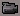
ボタンを押すと、あらゆる透視図法のビューポートが、そのグループによって制御されているアクタの位置に固定されます。シーケンスをスクラブすると、カメラはそのオブジェクトともに移動します。また、エディタカメラを移動させると、アクタがそれに付き従って動き回ります。キーフレームを調整してオブジェクトを特定の方向に向ける場合便利です。 カメラを Director (ディレクター) グループに固定した場合、カメラは、現在のアクティブなカメラを通してビューすることになります。 これによって、シーンがインゲームで実際どのように見えるかプレビューすることができます。Director グループを含む Matinee シーケンスを開く場合は必ず、自動的に realtime モードがあらゆる透視図法のビューポートで有効になり、カメラが Director グループに固定されることになります。カメラアクタ
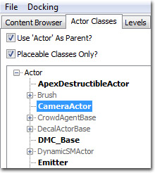
次は、レベル内に追加された CameraActor です。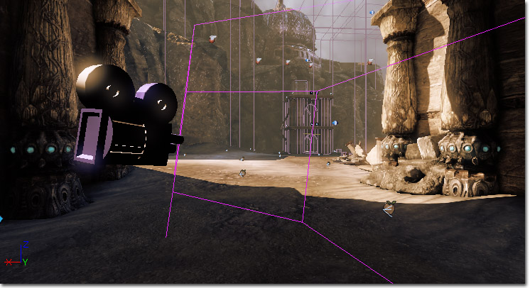
カメラメッシュと視錐台は、エディタ内だけで表示され、ゲーム内では表示されません。Matinee 内でスクラブすると、アクティブなカメラ錐台が黄色く強調表示されます。アクティブでないカメラは、それぞれ、グループエディタカラーで描画され、どのグループがどのカメラを制御している代わりやすくなっています。 Constrain Aspect Ratio (アスペクト比を制約する) が true に設定された CameraActor を通してビューすると、黒いバーがビューに追加されて、スクリーンの形状が強調されます。エディタ内でこのバーが追加されるのは、ビューが現在 CameraActor に固定されている場合に限ります。Matinee の複製
シネマティックス
Matinee データのエクスポートとインポート
- Matinee シーケンスにバインドされたカメラ
- Matinee シーケンスにバインドされたアクタ
- 一定のトラックのためのアニメーションカーブ
- 移動トラック
- 浮動プロパティ トラック
- 現在のレベルのすべてのライト
- 現在のレベルのすべての静的メッシュ (ポリゴンおよびブラシジオメトリ、マテリアルを含む)
- 現在のレベルのすべての エミッタ （配置キューのみ）
- 現在は、FBX の使用を推奨します。
- 現在の UE3 ビルドは、ColladaMAX 3.05B および ColladaMaya 3.05B に関してしかテストしていません。
キーの削減
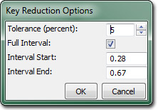
以下は、このツールのプロパティです。- Tolerance - 前のキーと次のキーを結ぶ直線から、あるキーがどのくらい離れていると削除できるかを設定します。
- Full interval - true に設定されている場合、トラックのキーの最大間隔を使用してキーを削減します。
- Interval Start - キーの削減を開始する時間を設定します。
- Interval End - キーの削減を終了する時間を設定します。
Gamecaster の統合
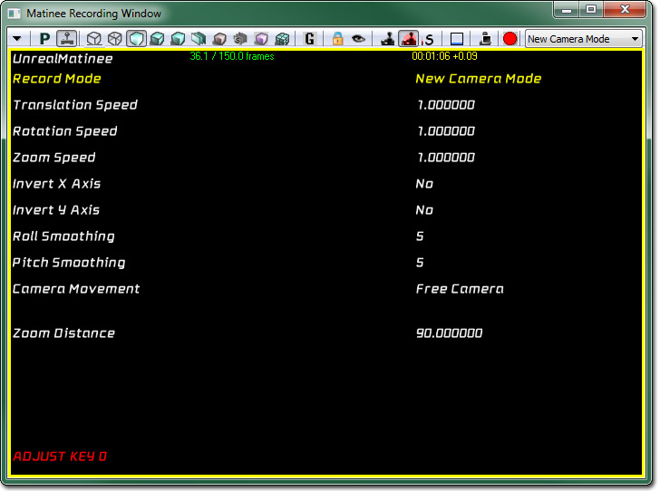
「Unreal」は、「Gamecaster」バーチャルカメラの周辺装置をサポートしています。これによって、シネマティックスクリエーターが、素早くカメラトラックを記録できるようになります。録画ウィンドウは、現在 Matinee ツールバーの右端にあります。また、「Matinee のための録画ウィンドウの起動」ヘルプテキストを備えています。 基本的な制御構成は、次のようになります。- パン動作 － 左のアナログスティック
- カメラのズーム － 右のアナログスティック
- 録画/録画の中止 － 左のサイドボタン
- 選択されたメニューオプションの変更 － 左ホイール
- 選択されたメニューの値の変更 － 右ホイール
- メニューの値のリセット － 右ホイールを押す
- メニューの表示のトグル － 左ホイールを押す
- 以前に録画したシネマティックスの再生 － 右のアナログスティックを押す
- New Camera Mode (新たなカメラモード) － あらゆる録画は、新たなカメラアクタを作成選択し、動きを作り出し、録画する FOV トラックを作成します。
- New Attached Camera Track (新たな付属カメラトラック) － あらゆる録画は、新たなカメラを作成選択し、適切なトラックを作成し、選択されたオブジェクトに付属します。アクタおよび他のカメラに付属して複雑なドリーを作成するのに最適です。
- Duplicate selected tracks (選択したトラックを複製する) － 選択したトラックを複製選択し、それらのトラックに録画します。1 台のカメラで複数の「テイク」を撮って、後にレビューするのに最適です。
- Replace selected tracks (選択されたトラックを置き換える) － 既存のトラックを上書きするために使用されます。これを使用すると、出来のよくないトラックを簡単に消去し、再録画することができます。
- Free Camera (自由なカメラ) － 左アナログスティックにより、カメラ平面でパンします。(すなわち、スティックを前に動かすと、カメラはスクリーンの中へと入っていきます。)
- Planar Camera (平面のカメラ) － 左アナログスティックにより、XY 平面でのみパンします。
- 録画後、選択したトラックのキーは、なるべく減らすようお勧めします。
- フレームレートを最大化するには、標準エディタのビューポートは、録画中すべて real-time (リアルタイム) モードを回避しているようお勧めします。
- この録画システムは、コンソールのコントローラーとも互換性があり、X 軸と Y 軸の転換をサポートしています。